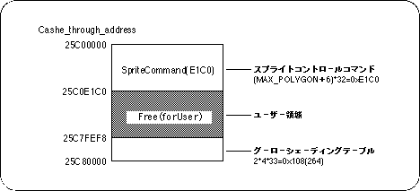

VDP1 VRAM memory map
Return to previous page | Return to menu | Go to next page
3. Memory map of VDP1 VRAM
The VDP1 VRAM starting from 0x25C00000 is not used by the user because the first and last areas are used by the system.
Figure 3-1 VDP1 VRAM memory map

Return to previous page | Return to menu | Go to next page